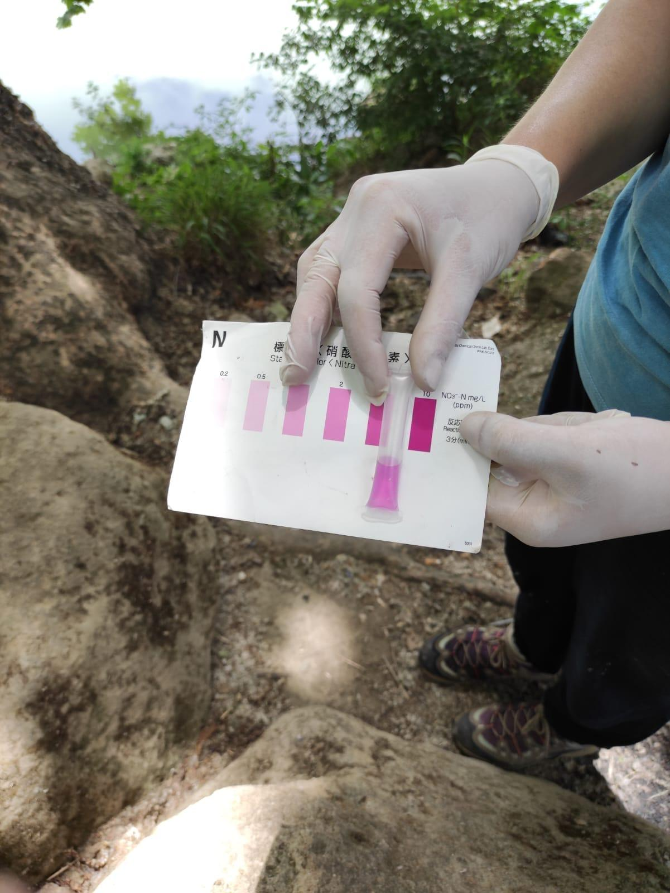

Nitrati
Cosa sono i nitrati
L’azoto (N) è uno dei principali costituenti di tutti gli organismi, e si incontra in natura prevalentemente allo stato gassoso (N2). Questa forma viene fissata grazie all’azione di microrganismi azoto fissatori che convertono l’azoto atmosferico in ammoniaca e poi in nitrati, tra i principali nutrienti per le piante. I nitrati sono molto solubili in acqua e quindi seguono le sue dinamiche .
Strumenti da utilizzare per il monitoraggio
Kit di Fresh Water Watch
Per svolgere la misura A Sud utilizza i kit di Fresh Water Watch che comprendono provette contenenti dei reagenti, che a contatto con l’acqua cambia colore in base alla concentrazione dei nitrati. Nel kit è inclusa anche una scala colorimetrica per poter risalire al dato relativo alla concentrazione di nitrati nel campione a acqua.
Procedimento
Prendere la cuvetta e riempirla d’acqua. Risciacquare la cuvetta per tre volte. La quarta volta prendere l’acqua fino al livello segnato sulla cuvetta, circa a metà. Prendere il contenitore del reagente, rimuovere la linguetta verde e premere di modo da far uscire l’aria. Inserire il contenitore del reagente (sempre tenendo premuto) capovolto all’interno della cuvetta con l’acqua. Una volta inserito, rilasciare la pressione in modo da far entrare l’acqua. Scuotere la provetta e aspettare 3 minuti.
Comparare il colore della soluzione contenuta nel contenitore con i clori di riferimento sul cartellino presente all’interno del kit.

Quali rischi sono associati a valori alti di nitrati
ll nitrato (NO3-) è sia solubile che mobile e di conseguenza segue le dinamiche dell’acqua con cui si sposta sia nei deflussi superficiali sia in quelli subsuperficiali. La lisciviazione attraverso il terreno raggiunge infine le acque di falda in cui può persistere per anni anche nel caso di acque sotterranee poco profonde.
Processo per cui le sostanze organiche ed i sali minerali solubili filtrano dagli strati superficiali del suolo verso quelli più profondi, per effetto della percolazione delle acque piovane.
Numerosi studi hanno dimostrato che la lisciviazione per drenaggio sub-superficialedei suoli agricoli, dovuta a precipitazioni o irrigazione è una delle principali fonti di inquinamento per i corpi idrici superficiali e sotterranei. Essa costituisce una minaccia per l’ambiente idrico quando le concentrazioni diventano elevate. Anche l’assetto idrogeologico, l’andamento stagionale e le attività antropiche sono fattori importanti che influenzano la mobilità e l’accumulo di nitrati.
Generalmente l’attività antropica può contribuire all’incremento di nitrati per mezzo di dilavamento diffuso dei terreni agricoli in cui sono stati aggiunti fertilizzanti di origine chimica o organica, scarichi civili (acque di dilavamento di discariche o fognature), scarichi agro-zootecnici,, scarichi industriali (usati nella produzione del vetro e di esplosivi e nell’industria alimentare come additivi es. E249, E250, E251 ed E252).
Il monitoraggio di questo parametro è considerato molto importante nella valutazione dello stato di qualità delle acque a livello mondiale, sia di quelle dolci (in particolare quelle lacustri) e potabili che ancora più delle acque marine, per le quali, come in quelle lacustri, l’eccessiva presenza di nitrati rappresenta una delle cause più importanti dell’eutrofizzazione o boom algale. Questo fenomeno determina un’elevata crescita di sostanza organica la cui decomposizione innesca una serie di effetti a catena che possono portare alla carenza o assenza di ossigeno che sua volta può causare morie di pesci.
Elevate concentrazioni di nitrati e/o fosfati innescano facilmente i processi di eutrofizzazione delle acque superficiali (inquinamento da eccesso di nutrienti). Il fenomeno dell’eutrofizzazione o bloom algale, assieme all’inquinamento organico, in ambienti lentici (con acque ferme o poco fluenti) è una delle principali cause della carenza di ossigeno delle acque che a sua volta può portare a gravi conseguenza come ad esempio le “morie di pesci”. La causa principale della formazione di una zona carente di ossigeno (anossia) è dovuta ai processi di degradazione delle alghe ad opera di batteri che consumano grandi quantità di ossigeno e in alcuni casi producono anche elevate concentrazioni di ammoniaca e acido solfidrico, che possono risultare tossiche per l’ecosistema acquatico.
All’interno della normativa italiana nel caso delle acque dolci, come specificato precedentemente, i nitrati vengono monitorati per il calcolo del LIMeco. Per questa ragione, non c’è un valore limite per tale parametro dal punto di vista normativo per le acque di fiume. Occorre individuare il valore del LIMeco che è un aggregato di misurazioni, per comprendere lo stato di qualità del corso d’acqua.